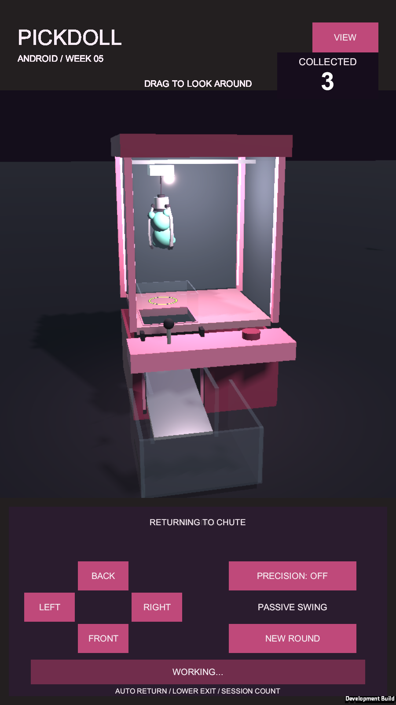
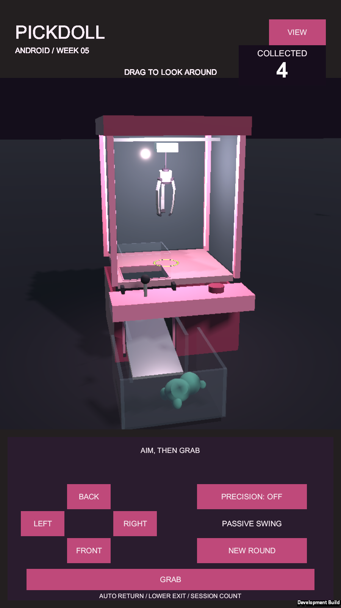
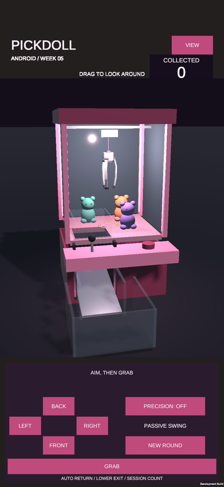
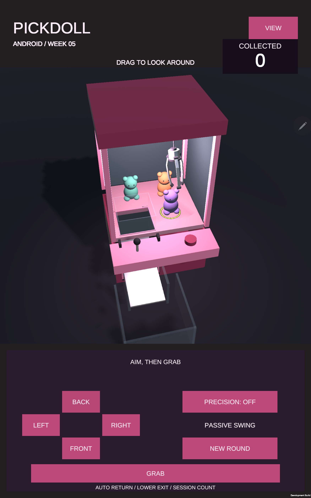

한 번 눌러 집고,
기계 아래에서 받기.
GRAB 한 번으로 자동 배출까지
- 열림 준비·확인
- 하강·조준 조정
- 닫힘·상승
- 배출 구멍으로 복귀
- 높은 위치에서 흔들림 대기
- 자동 열기
- 중앙 대기 위치 복귀
사용자가 보고한 “내려갈 때 닫혀 있거나 한 번 더 눌러야 열리는” 흐름을 수정했다. 하강 전에 모터에 열림을 명령하고 실제 손가락 각도를 확인한다. 하강 중에도 열림 목표를 계속 유지한다. 공간이 막혀 충분히 열리지 않으면 내려가지 않고 이동 안내를 표시한다. 벽에 닿은 손가락의 물리 반응은 유지한다.
5주차에서는 수동 OPEN을 기다리지 않는다. 준비·하강 중 조준 조정은 가능하고, 자동 복귀·배출 중 입력과 중복 GRAB은 막는다. 빈 집기나 운반 중 놓친 경우에도 자동 사이클은 대기 상태로 돌아온다.
실제로 뚫린 바닥과 빈 캐비닛
기존 바닥을 네 판으로 나눠 앞쪽 왼편에 약 0.36×0.36 월드 단위 구멍을 만들었다. 캐비닛 내부도 비워 경사 통로가 실제로 이어진다. 인형은 중력·충돌·마찰로 내려오며 출구로 순간 이동시키지 않는다.
아래 받침대에 남는 인형
기계 앞 아래 출구에서 인형이 투명 받침대로 나온다. 경사로의 걸리는 가이드를 제거하고 표면 마찰·전환부를 조정했다. 낮아진 조작판 아래에서 인형 머리가 걸리지 않도록 통로의 시작 높이도 낮췄다. 하부 캐비닛 높이를 0.95에서 0.475 월드 단위로 절반으로 줄이고, 전시 공간 크기는 유지했다. 압축된 하부에 맞춰 경사 통로·출구·받침대와 카메라 구도를 조정했다.
추가 피드백 반영
- 배출 전 별도 하강을 없애고 높은 위치에서 바로 놓는다.
- 구멍 네 면에 투명 충돌 벽을 세워 전시 공간에서 굴러 들어오는 것을 막는다.
- 카운트 숫자를 19에서 56으로 확대하고 짙은 배경과 흰색 굵은 글씨로 표시한다.
- S26에서 보고된 미집계 의심을 추적한다. 중심점 대신 인형 충돌체와 통로 영역의 겹침을 감지하며, 전체 몸체가 출구 앞면을 벗어나야 획득한다. 개발 빌드에는 입구 통과·획득 수 로그를 남긴다.
- 0.5.1 설치 점검에서 시작 관절 배치 불일치를 발견했다. 본체·매달림 기준점의 물리 좌표만 변경되고 장면 Transform 좌표는 저장되지 않던 문제를 수정했다. 재배치 전 시작 상태를 검사하는 회귀 항목을 추가했다.
굴러 들어가도 최종 배출되면 획득
사용자 답변에 따라 집게로 들었는지와 무관하게, 바닥 구멍을 거쳐 최종 출구에서 인형의 충돌체 전체가 앞면 밖으로 나오면 획득한다. 들어 올렸거나 구멍에 걸친 것만으로는 집계하지 않는다. 하부 통로를 거치지 않고 받침대 위치에만 놓인 인형도 획득으로 처리하지 않는다.
인형마다 현재 재고를 구분하는 고유 표식을 두고, 한 표식은 한 번만 기록한다. 여러 충돌체나 반복 감지에서도 이벤트가 중복되지 않는다. 획득 이벤트는 이후 저장·도감·업적 연동의 연결 지점이다.
현재 카운터는 실행 세션의 누적 획득 수다. NEW ROUND / R은 인형 3개를 다시 채우면서 이 수를 유지한다. 새 재고는 새 표식을 받아 다시 획득할 수 있다. 앱 종료·재실행 후 기록 보존은 아직 없으며 6주차 로컬 저장에서 구현한다.
실제 실행 화면


검증 결과
| 검사 | 확인 |
|---|---|
| 시작 관절 안정성 | 재배치 없이 시작한 장면에서 본체·매달림 기준점·손가락 정렬 유지 |
| 닫힌 상태에서 시작 | GRAB 한 번 → 열림 준비 → 열린 상태 확인 후 하강 |
| 자동 획득 3회 | 일반 그립·지정 조준 3개 위치 모두 배출·1회 획득·중앙 복귀. 인형은 지면이 아닌 아래 받침대에 남음 |
| 통로·자세 | 선 자세·옆으로 누움·뒤집힘 모두 중력으로 배출. 바닥 구멍에 숨은 전체 판 충돌체가 없는지 확인 |
| 굴러 들어간 경우 | 투명 가드가 굴러 진입하는 것을 막는 실행 검사 통과. 실제로 통로를 지나 배출된 인형은 경로와 무관하게 획득하는 원칙 유지 |
| 조기·중복 집계 방지 | 입구에만 있거나 통로를 거치지 않은 출구 위치에서는 집계하지 않음. 반복 감지 20회에도 동일 인형은 1회 |
| 빈 집기·재고 초기화 | 빈 사이클은 획득 없이 복귀. 새 라운드는 세션 누적을 유지하고 재고 표식 갱신. 구멍 위에서 새 하강 시작은 방지 |
| 연속 적재 | 에디터 물리 검사에서 인형 3개를 순서대로 배출한 뒤 모두 받침대에 유지 |
지정 배치·일반 그립을 사용한 기능 검사다. 실제 플레이의 성공률 보장이 아니며 약한 힘, 조준 오차, 잔여 흔들림으로 인형을 놓칠 수 있다. 약한 그립의 유지 여부를 강제하지 않는다.
0.5.2 Windows 실행 검사 원문
PASS startup_joint_assembly_stable=True closed_start_opens_before_descent=True exit_without_chute_not_counted=True entry_only_not_counted=True upright_delivery=True; duplicate_probes_once=True; pos=(-0.23, 0.14, -1.15) gravity_pose_90=True; pos=(-0.17, 0.14, -1.06) gravity_pose_180=True; pos=(-0.23, 0.14, -1.05) transparent_guard_blocks_rolling=True; pos=(-0.23, 0.73, 0.06) automatic_0: acquired=True; home=True; visible_tray=True; busy_input_blocked=True; no_early_count=True; high_release=True; pos=(-0.16, 0.14, -1.17); total=4 automatic_1: acquired=True; home=True; visible_tray=True; busy_input_blocked=True; no_early_count=True; high_release=True; pos=(-0.33, 0.14, -1.21); total=5 automatic_2: acquired=True; home=True; visible_tray=True; busy_input_blocked=True; no_early_count=True; high_release=True; pos=(-0.19, 0.14, -1.14); total=6 empty_cycle_returns_without_acquisition=True new_round_preserves_session_count=True; events=6; total=6 large_counter_matches_receipts=True grab_over_hole_blocked=True
에디터 통로·적재 검사 원문
PASS physical_hole_clear=True gravity_drop orientation=0: delivered=True; pos=(-0.23, 0.14, -1.18); entered=True; count=1; events=1 gravity_drop orientation=90: delivered=True; pos=(-0.22, 0.14, -1.08); entered=True; count=2; events=2 gravity_drop orientation=180: delivered=True; pos=(-0.23, 0.14, -1.10); entered=True; count=3; events=3 automatic_cycle at=(-0.20, 0.16): success=True; phase=Ready; prize=(-0.24, 0.14, -1.09); count=4 automatic_cycle at=(0.17, -0.16): success=True; phase=Ready; prize=(-0.22, 0.14, -1.07); count=5 automatic_cycle at=(0.18, 0.16): success=True; phase=Ready; prize=(-0.05, 0.14, -1.21); count=6 stack_prize=(-0.26, 0.14, -1.18); entered=True; delivered=True stack_prize=(-0.22, 0.14, -1.02); entered=True; delivered=True stack_prize=(-0.18, 0.17, -0.76); entered=True; delivered=True three_prizes_retained_in_tray=True; count=9; events=9
S26 울트라 확인
S26 울트라 SM-S948N에 최종 0.5.2(code 7)를 설치·실행했다. APK v2 서명을 검증했으며, 실제 시작 화면에서 집게 관절이 정상적으로 매달리고 확대된 카운터·투명 가드·축소된 하부가 보이는 것을 확인했다. 0.5.0에서 보고된 미집계 의심에 대해서는 최종 수정본의 실제 배출·카운트 증가 사용자 재확인을 기다리고 있다.

APK SHA-256: e6c7338660ae76515f3bffef718d8fe7602f7f1e2bbca7cb0b54de8b8ad89f32
0.5.2 APK · 파일 크기: 42079533 bytes
갤럭시 탭 설치
갤럭시 탭 SM-X820에도 같은 0.5.2(code 7) APK를 설치·실행했다. 집게·확대 카운터·방향 및 GRAB 버튼의 화면 표시를 확인했다. 실제 배출 후 카운트 증가의 사용자 재확인은 대기 중이다.

조작과 다음 작업
방향 버튼·방향키: 기계 정면 기준 이동 / PRECISION·Shift: 미세 이동 / GRAB·Enter·Space: 자동 사이클 / NEW ROUND·R: 재고 다시 채우기 / 드래그·VIEW: 시점. 수동 회전은 없다.
씬: Assets/PickDoll/Scenes/Week05.unity
Windows: Unity/Builds/Week05/Windows/PickDoll.exe
APK: Unity/Builds/Week05/Android/PickDoll-week05.apk
빌드·검사: Unity/tools/Run-Unity.ps1 -Week 5 -Task Generate|Validate|Windows|Android
실행 검사: --pickdoll-week05-test
아직 임시 곰 3개와 고정 재고 배치를 사용한다. 6주차에는 로컬 저장·종류별 데이터 기반·임시 3종·7개 랜덤 배치와 지인 테스트를 진행한다. 장시간 발열·정량 프레임률은 후속 검증 대상이다.
0.5.2에서도 AssetPackManager 클래스 누락 시작 로그를 관찰했다. 화면은 정상 출력됐으며 공개 출시 전 추적 대상으로 유지한다.